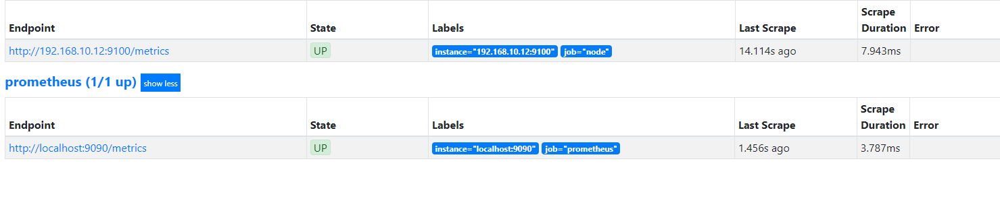

简介
Prometheus受启发于Google的Brogmon监控系统（相似的Kubernetes是从Google的Brog系统演变而来），从2012年开始由前Google工程师在Soundcloud以开源软件的形式进行研发，并且于2015年早期对外发布早期版本。2016年5月继Kubernetes之后成为第二个正式加入CNCF基金会的项目，同年6月正式发布1.0版本。2017年底发布了基于全新存储层的2.0版本，能更好地与容器平台、云平台配合。
对比传统监控prometheus优势
- 趋于预测分析：prometheus通过对监控数据持续采集及统计，对监控指标进行长期的趋势分析，例如，通过对cpu的使用率来预测在未来的某一个时间段对资源进行扩容。
- 对照分析：两个版本的系统运行资源使用情况的差异如何？在不同容量情况下系统的并发和负载变化如何？通过监控能够方便的对系统进行跟踪和比较。
- 部署更加轻量化：(这里只针对物理机节点部署)Prometheus基于Golang编写，编译后的软件包，不依赖于任何的第三方依赖，易于管理。用户只需要下载对应平台的二进制包，解压并且添加基本的配置即可正常启动。
- 监控服务内部状态：Pometheus鼓励用户监控服务的内部状态，基于Prometheus丰富的Client库，用户可以轻松的在应用程序中添加对Prometheus的支持，从而让用户可以获取服务和应用内部真正的运行状态。
- 查询语言PromQL：Prometheus内置了一个强大的数据查询语言PromQL。 通过PromQL可以实现对监控数据的查询、聚合。同时PromQL也被应用于数据可视化(如Grafana)以及告警当中。
- 可扩展性：Prometheus是如此简单，因此你可以在每个数据中心、每个团队运行独立的Prometheus Sevrer。Prometheus对于联邦集群的支持，可以让多个Prometheus实例产生一个逻辑集群，当单实例Prometheus Server处理的任务量过大时，通过使用功能分区(sharding)+联邦集群(federation)可以对其进行扩展。
- 易于集成：prometheus提供大量的第三方实现的监控数据采集及支持：JMX， CloudWatch， EC2， MySQL， PostgresSQL， Haskell， Bash， SNMP， Consul， Haproxy， Mesos， Bind， CouchDB， Django， Memcached， RabbitMQ， Redis， RethinkDB， Rsyslog等等，同时prometheus还支持与其他监控系统集成，zabbix，Graphite， Statsd， Collected， Scollector， muini， Nagios等。
部署Prometheus Server
二进制安装部署方法
https://prometheus.io/download/找到最新版本的Prometheus Sevrer软件包
下载并解压包
1 | wget https://github.com/prometheus/prometheus/releases/download/v2.11.0-rc.0/prometheus-2.11.0-rc.0.linux-amd64.tar.gz |
解压后目录下会包含Prometheus的配置文件prometheus.yml
1 | cat prometheus.yml |
prometheus自身本是一个时序数据库，需要创建数据目录
1 | mkdir data |
启动服务
1 | ./prometheus |
正常情况下的输出内容如下
1 | [root@localhost prometheus-2.11.0-rc.0.linux-amd64]# ./prometheus |
可以查看一下端口，默认的9090端口是已经启动，浏览器可直接访问ip:9090查看prometheus ui
1 | [root@localhost ~]# ss -tnl |
使用容器安装
直接使用docker hub的官方镜像即可，docker启动目录如下
1 | docker run -p 9090:9090 -v /etc/prometheus/prometheus.yml:/etc/prometheus/prometheus.yml prom/prometheus |
部署Node Exporter
- 在Prometheus的架构设计中，Prometheus server不能直接监控特定的服务目标，Server本身只负责数据收集、存储和提供对外的查询接口，想磁盘、cpu使用率我们需要在主机上部署Node_Exporter组件，Prometheus通过Node_exporter暴露的HTTP服务地址来周期性的拉取监控数据
- exporter同样采用golang并且不存在任何的第三方依赖，只需要下载，解压即可运行。https://prometheus.io/download/获取最新的node exporter版本的二进制包。
1
2wget https://github.com/prometheus/node_exporter/releases/download/v0.18.1/node_exporter-0.18.1.linux-amd64.tar.gz
tar xf node_exporter-0.18.1.linux-amd64.tar.gz
启动服务，正确输出内容
1 | [root@node02 node_exporter-0.18.1.linux-amd64]# ./node_exporter |
访问可以ip:9100/metrics即可查看暴露的相关指标数据，HELP为解释，TYPE为类型
从Node Exporter收集监控数据
为了能够让Prometheus Server能够从当前node exporter获取到监控数据，这里需要修改Prometheus配置文件。编辑prometheus.yml并在scrape_configs节点下添加以下内容:
1 | scrape_configs: |
重启Prometheus Server
访问ip:port/targets 看status为up即可完成部署
